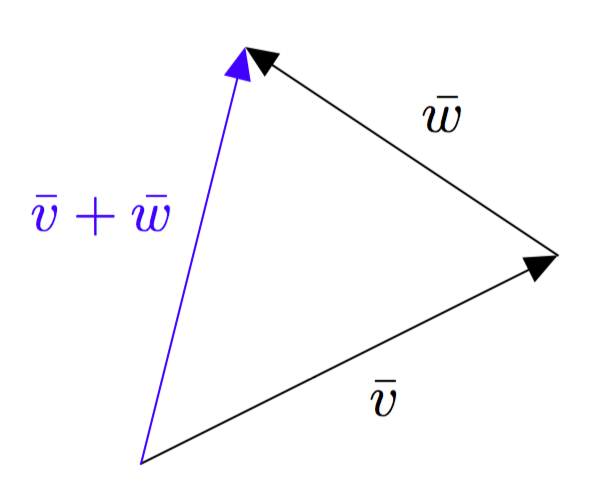
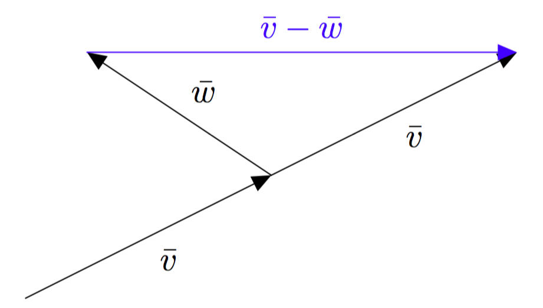

Vektorit ja $xyz$-koordinaatisto
Tämän luvun tavoitteena on, että vahvistat edellisessä luvussa käsiteltyjen asioiden osaamista ja sovellat oppimaasi $xyz$-koordinaatiston vektoreihin. Lisäksi osaat
- piirtää $xyz$-koordinaatiston ja sijoittaa sinne pisteitä
- ratkaista yhtälöryhmän ilman laskinta ja laskimella.
Tavoitteiden toteutumista pääset arvioimaan luvun lopussa olevan itsearviointitestin avulla.
Edellisessä luvussa tutustuimme $xy$-koordinaatistoon, jonka avulla voidaan kuvata tason pisteitä ja vektoreita. Kolmiulotteisen avaruuden pisteitä ja vektoreita voidaan kuvata niin sanotun $xyz$-koordinaatiston avulla. Tämä koordinaatisto saadaan $xy$-koordinaatistosta lisäämällä siihen yksi akseli, joka on kohtisuorassa sekä $x$-akselia että $y$-akselia vastaan. Kolmatta akselia sanotaan $z$-akseliksi.

Yllä olevassa kuvassa $z$-akseli suuntautuu kohti katsojaa. Kolmiulotteista koordinaatistoa voidaan katsoa muistakin suunnista, jolloin esimerkiksi $x$-akseli saattaa suuntautua kohti katsojaa, kuten alla olevassa kuvassa. Koordinaattiakselien keskinäiset suunnat pysyvät kuitenkin samoina. Niitä voidaan havainnollistaa oikean käden sormien avulla: peukalo vastaa $x$-akselia, etusormi $y$-akselia ja keskisormi $z$-akselia.

Avaruuden piste $P$ ilmaistaan lukukolmikkona $(x,y,z)$, missä ensimmäiset kaksi lukua ilmoittavat pisteen paikan $x$- ja $y$-akseleiden suhteen ja kolmas koordinaatti kertoo, missä piste sijaitsee $z$-akselin suunnassa origoon verrattuna. Alla olevassa kuvassa on havainnollistettu $xyz$-koordinaatiston pisteitä $S=(1,0,4)$ ja $R = (3,2,2)$.

Yllä olevasta kuvasta nähdään myös, miten $xyz$-koordinaatisto yleensä piirretään. Katsojaa kohti tuleva akseli piirretään 135 asteen kulmassa oikealle suuntautuvaan akseliin nähden. Lisäksi katsojaa kohti tulevan akselin yksikön pituudeksi valitaan noin puolet muiden akseleiden yksikön pituudesta, jotta vaikutelmasta tulee kolmiulotteinen.
Esimerkiksi yllä olevassa kuvassa $x$- ja $y$-akseleiden yksiköksi on valittu kolme ruutua ja $z$-akselin yksikön pituudeksi yhden ruudun lävistäjä eli $\sqrt{2}\approx 1{,}4$ ruutua.
Piirrä kolmiulotteinen koordinaatisto ja merkitse siihen pisteet $A=(3,0,1)$, $B=(-2,1,2)$ ja $C=(2,3,-2)$.
Kolmiulotteisessa koordinaatistossa kaikki vektorit voidaan esittää koordinaattiakselien suuntaisten yksikkövektoreiden avulla samaan tapaan kuin $xy$-tasossa. Erona on, että koordinaattiakselien suuntaisia yksikkövektoreita on nyt kolme: $\vi$, $\vj$ ja $\vk$. Niitä on havainnollistettu alla olevassa kuvassa.

Ilmoita alla olevan kuvan vektori $\bar{v}$ vektoreiden $\bar{\imath}$, $\bar{\jmath}$ ja $\vk$ avulla.

MÄÄRITELMÄ: VEKTOREIDEN SAMUUS
Kaksi vektoria ovat samat, jos ne voidaan esittää samalla tavalla vektoreiden $\bar{\imath}$, $\bar{\jmath}$ ja $\vk$ avulla. Tarkemmin sanottuna vektorit $\vv = x_1\vi + y_1\vj + z_1\vk$ ja $\vw = x_2\vi + y_2\vj + z_2\vk$ ovat samat eli $\vv = \vw$, jos ja vain jos $x_1 = x_2$ ja $y_1 = y_2$ ja $z_1 = z_2$.
Tiedetään, että $\vv = -9\vi + (3-a)\vj + 4b\vk$ ja $\vw = 3c\vi - 7\vj - 20\vk$. Etsi sellaiset luvut $a$, $b$ ja $c$, että $\vv = \vw$. Kuinka monella tavalla tällaiset luvut on mahdollista valita?
Pisteen $P = (x,y,z)$ paikkavektori määritellään kolmiulotteisessa koordinaatistossa samaan tapaan kuin $xy$-tasossa: pisteen $P = (x,y,z)$ paikkavektori tarkoittaa vektoria, jonka alkupiste on origo ja loppupiste on $P$.
Ilmaise alla olevan kuvan vektori $\vv$ vektoreiden $\vi$, $\vj$ ja $\vk$ avulla. Minkä pisteen paikkavektori se on?

Kolmiulotteisessa koordinaatistossa nollavektori tarkoittaa vektoria $\bar{0} = 0\vi + 0\vj + 0\vk$. Se on origon eli pisteen $O = (0,0,0) paikkavektori.
Vektoreiden laskutoimituksia
Vektoreiden summa ja erotus lasketaan $xyz$-koordinaatistossa samaan tapaan kuin $xy$-koordinaatistossa eli komponenteittain. Esimerkiksi vektoreiden $\vv = 2\vi - 5\vj + 3\vk$ ja $\vw = -7\vi + 9\vj + 8\vk$ summa on
$$
\begin{align*}
\vv + \vw
&= (2-7)\vi + (-5+9)\vj + (3+8)\vk \\
&= -5\vi + 4\vj + 11\vk
\end{align*}
$$
ja erotus on
$$
\begin{align*}
\vv - \vw
&= (2-(-7))\vi + (-5-9)\vj + (3-8)\vk \\
&= 9\vi - 14\vj - 5\vk.
\end{align*}
$$
Tutki vektoreita $\bar{v}= 3\bar{\imath}-4\bar{\jmath} + 7\vk$, $\bar{w}=9\bar{\imath}-5\vk$ ja $\bar{u}=-2\vj+6\vk$. Laske seuraavat vektorit:
- $\bar{v}+\bar{w}$
- $\bar{w}+\bar{u}$
- $\bar{v}-\bar{w}$
- $\bar{u}-\bar{v}$.
Summan ja erotuksen määrittäminen piirtämällä on $xyz$-koordinaatistossa paljon hankalampaa kuin $xy$-koordinaatistossa, koska tarkkojen kolmiulotteisten kuvien piirtäminen on usein vaikeaa. Summaa ja erotusta voidaan kuitenkin havainnollistaa mallikuvilla. Summavektori saadaan muodotettua laittamalla yhteenlaskettavat vektorit peräkkäin ja piirtämällä vektori ensimmäisen yhteenlaskettavan alkupisteestä viimeisen yhteenlaskettavan loppupisteeseen. Tätä on havainnollistettu alla olevassa kuvassa.

Erotusvektori $\vv - \vw$ saadaan muodostettua laittamalla peräkkäin vektorit $\vv$ ja $-\vw$ kuten alla olevassa kuvassa.

Toinen vaihtoehto erotusvektorin $\vv - \vw$ muodostamiseen on etsiä reitti, jossa kuljetaan vektorit $-\vw$ ja $\vv$ peräkkäin, kuten alla olevassa kuvassa.

Tätä ideaa voidaan hyödyntää kahden pisteen välisen vektorin määrittämisessä samaan tapaan kuin $xy$-koordinaatistossa. Alla olevasta kuvasta voidaan päätellä, että vektori $\pv{AB}$ saadaan vähentämällä loppupisteen paikkavektorista $\pv{OB}$ alkupisteen paikkavektori $\pv{OA}$ eli
$$\pv{AB} = \pv{OB} - \pv{OA}.$$

Tiedetään, että $A= (1,5,-3)$ ja $\pv{AB} = -4\vi-7\vj + 15 \vk$.
- Muodosta pisteen $A$ paikkavektori.
- Määritä pisteen $B$ paikkavektori $\pv{OB}$ ja piste $B$. Havainnollista ratkaisuasi mallikuvan avulla.
- Selitä omin sanoin, miten paikkavektorin $\pv{OA}$ muodostaminen auttoi b-kohdan ratkaisemista.
Myös vektorin kertominen reaaliluvulla tapahtuu $xyz$-koordinaatistossa samaan tapaan kuin $xy$-koordinaatistossa eli komponenteittain. Esimerkiksi vektorin $\vv = 2\vi - 5\vj + 3\vk$ skalaarimonikerta $-15\vv$ saadaan kertomalla kaikki komponentit luvulla $-15$. Siten
$$
\begin{align*}
-15\vv &= -15\cdot 2\vi + (-15) \cdot (-5)\vj + (-15)\cdot 3\vk \\
&= -30\vi + 75\vj - 45\vk.
\end{align*}
$$
Alla olevassa kuvassa piste $P$ jakaa janan $AB$ suhteessa $1:3$. Jana $AB$ muodostuu siis neljästä yhtä pitkästä osasta. Jana $AP$ on yhden osan mittainen ja jana $PB$ on kolmen osan mittainen. Tätä tietoa voidaan hyödyntää esimerkiksi pisteen $P$ paikkavektorin määrittämisessä. Sitä harjoitellaan seuraavassa tehtävässä.

Tiedetään, että $A = (1,-1,0)$ ja $B = (5,7,8)$. Tiedetään lisäksi, että piste $P$ jakaa janan $AB$ suhteessa $1:3$ kuten yllä olevassa kuvassa. Piirrä tilanteesta mallikuva ja havainnollista ratkaisusi vaiheita sen avulla.
- Määritä paikkavektorit $\pv{OA}$ ja $\pv{OB}$.
- Muodosta vektori $\pv{AB}$.
- Ilmaise vektori $\pv{AP}$ vektorin $\pv{AB}$ avulla.
- Määritä paikkavektori $\pv{OP}$.
- Mitkä ovat pisteen $P$ koordinaatit?
Vektorin pituus ja suunta
Vektorin pituus saadaan myös $xyz$-koordinaatistossa laskettua Pythagoraan lauseen avulla, mutta sitä täytyy soveltaa useamman kerran. SELITYSTÄ JA KUVA

Koska 2. potenssiin korotus tekee kaikista luvuista epänegatiivisia, voidaan vektorin pituus määritellä seuraavasti:
MÄÄRITELMÄ: VEKTORIN PITUUS
Vektorin $\vv=x\vi+y\vj + z\vk$ pituus on $$|\vv|=\sqrt{x^2+y^2+z^2}.$$
TÄHÄN TEHTÄVÄ, JOSSA PITÄÄ LASKEA VEKTORIN PITUUS
Tämä pätee kaikille vektoreille. Vektorin $t\vv$ pituus $|t\vv|$ saadaan kertomalla vektorin $\vv$ pituutta luvun $t$ itseisarvolla. Toisin sanottuna $$|t\vv|=|t|\cdot |\vv|.$$
EDELLINEN ASIA TEOREEMAKSI?
Esimerkiksi vektorit $\va=4\vi+6\vj$ ja $\vb=-2\vi-3\vj$ ovat yhdensuuntaiset, sillä
\begin{align*}
\va
&=4\vi+6\vj \\
&=-2(-2\vi-3\vj) \\
&=-2\vb.
\end{align*}
Yllä vektorin yhdensuuntaisuus osoitettiin muokkaamalla vektorin $\va$ lauseketta niin, että se saatiin ilmoitettua muodossa jokin luku kertaa vektori $\vb$. Toinen tapa tutkia vektoreiden yhdensuuntaisuutta on muodostaa yhtälö $\va=t\vb$ ja tutkia, löytyykö yhtälölle yksikäsitteistä ratkaisua $t$. Jos yksikäsitteistä ratkaisua ei löydy, niin tällöin vektorit eivät ole yhdensuuntaiset.
Tarkastele vektoria $\vv=-5\vi-5\vj$.
- Muodosta kaksi uutta vektoria, jotka ovat vektorin $\vv$ kanssa yhdensuuntaisia.
- Onko vektori $\vw=\vi+\vj$ yhdensuuntainen vektorin $\vv$ kanssa?
- Onko vektori $\vu=\vi+2\vj$ yhdensuuntainen vektorin $\vv$ kanssa?
Yhtälöryhmän ratkaiseminen
Vektoreiden pistetulo ja vektoreiden välinen kulma
MÄÄRITELMÄ: PISTETULO
Vektoreiden $\vv=x_1\vi+y_1\vj + z_1\vk$ ja $\vw=x_2\vi+y_2\vj + z_2\vk$ pistetulo on $\vv \cdot \vw = x_1x_2+y_1y_2 + z_1z_2$.
Tarkaste vektoreita $\va=7\vi+6\vj$, $\vb=3\vi-5\vj$ ja $\vc=5\vi-3\vj$.
- Piirrä vektorit $\va$, $\vb$ ja $\vc$ koordinaatistoon niin, että ne alkavat samasta pisteestä.
- Laske pistetulo $\va \cdot \vb$.
- Laske pistetulo $\va \cdot \vc$.
- Laske pistetulo $\vb \cdot \vc$.
- Millaisessa tilanteessa vektoreiden pistetulo on nolla? Vertaa edellisten laskujen tuloksia ja piirtämääsi kuvaa.
Pistetulolla voidaan laskea tavallisten laskusääntöjen mukaan (viittaus $xy$-koordinaatiston juttuun?)
TEOREEMA
Vektorin pistetulo itsensä kanssa on yhtä suuri kuin vektorin pituuden neliö. Toisin sanottuna $\vv \cdot \vv = \left|\vv\right|^2$
Tutkitaan seuraavaksi vektoreiden välisen kulman ja pistetulon yhteyttä. Vektoreiden välistä kulmaa voidaan tarkastella, jos vektoreiden alkupisteet ovat samat. Vektoreiden välisellä kulmalla tarkoitetaan muodostuvista kulmista pienempää. Tätä on havainnollistettu alla olevassa kuvassa.

Tarkastellaan yllä olevan kuvan vektoria $\vv$.
- Kuinka suuri on vektoreiden $\vv$ ja $2\vv$ välinen kulma?
- Kuinka suuri on vektoreiden $\vv$ ja $-\vv$ välinen kulma?
- Jos vektorit ovat samansuuntaiset, mikä niiden välinen kulma on?
- Jos vektorit ovat vastakkaissuuntaiset, mikä niiden välinen kulma on?
Vektoreiden välinen kulma voidaan laskea Geometria-kurssista tutun kosinilauseen avulla. Kosinilause on Pythagoraan lauseen yleistys. Pythagoraan lause pätee ainoastaan suorakulmaisille kolmioille, mutta kosinilausetta voi käyttää kaikille kolmioille. Kosinilauseen mukaan alla olevan kuvan kolmiossa
$$
c^2=a^2+b^2-2ab \cos \gamma.
$$

Ajattelemalla kolmion sivujen pituudet vektoreiden pituuksina kosinilauseesta saadaan yhtälö
$$
|\vv-\vw|^2=|\vv|^2+|\vw|^2-2|\vv||\vw| \cos(\vv,\vw).
$$
Merkintä $\cos(\vv,\vw)$ tarkoittaa vektoreiden $\vv$ ja $\vw$ välisen kulman kosinia.

Kosinilauseen ja pistetulon ominaisuuksien avulla saadaan perusteltua seuraava teoreema, joka yhdistää pistetulon ja vektoreiden välisen kulman.
TEOREEMA
Vektoreiden $\vv$ ja $\vw$ pistetulolle pätee $\vv \cdot \vw = |\vv||\vw|\cos (\vv, \vw)$.
Perustelu: Tiedetään, että vektorin pituuden neliö on aina sama kuin sen pistetulo itsensä kanssa. Tästä saadaan seuraava yhtälöketju:
$$
\begin{align*}
|\vv-\vw|^2
&=(\vv-\vw)\cdot(\vv-\vw) \\
&= \vv \cdot \vv -\vv\cdot\vw - \vw \cdot \vv+\vw\cdot\vw \\
&= |\vv|^2 - 2(\vv\cdot\vw) +|\vw|^2.
\end{align*}
$$
Toisaalta kosinilauseen mukaan
$$
|\vv-\vw|^2=|\vv|^2+|\vw|^2-2|\vv||\vw| \cos(\vv,\vw).
$$
Yhdistämällä edelliset tiedot saadaan yhtälö
$$
|\vv|^2 - 2(\vv\cdot\vw) +|\vw|^2 = |\vv|^2+|\vw|^2-2|\vv||\vw| \cos(\vv,\vw).
$$
Ratkaistaan tästä $\vv\cdot\vw$, jolloin saadaan
$$
\vv\cdot\vw = |\vv||\vw| \cos(\vv,\vw).
$$
Vektorin $\va$ pituus on $\left|\va\right| = 3$ ja vektorin $\vb$ pituus on $\left|\vb\right| = 7$. Laske edellisen teoreeman avulla pistetulo $\va \cdot \vb$, jos
- vektorit $\va$ ja $\vb$ ovat samansuuntaiset.
- vektorit $\va$ ja $\vb$ ovat vastakkaissuuntaiset.
- vektoreiden $\va$ ja $\vb$ välinen kulma on $45^{\circ}$.
- vektoreiden $\va$ ja $\vb$ välinen kulma on $135^{\circ}$.
- vektoreiden $\va$ ja $\vb$ välinen kulma on $90^{\circ}$.
Selitä omin sanoin, miten vektoreiden välinen kulma liittyy pistetulon etumerkkiin.
TEOREEMA
Oletetaan, että $\vv \neq \bar{0}$ ja $\vw \neq \bar{0}$. Vektorit $\vv$ ja $\vw$ ovat toisiaan vastaan kohtisuorassa, jos ja vain jos $\vv \cdot \vw = 0$.
Perustelu:
- Oletetaan, että vektorit $\vv$ ja $\vw$ ovat kohtisuorassa toisiaan vastaan eli $\sphericalangle(\vv,\vw)=90^{\circ}$. Tällöin
\begin{align*}
\vv \cdot \vw
&= |\vv||\vw|\cos (\vv, \vw) \\
&= |\vv||\vw|\cos 90^{\circ} \\
&= |\vv||\vw| \cdot 0 \\
&= 0.
\end{align*}
Siis $\vv \cdot \vw = 0$.
- Oletetaan, että $\vv \cdot \vw = 0$. Tiedetään, että $\vv \cdot \vw = |\vv||\vw|\cos (\vv, \vw)$. Näistä tiedoista voidaan päätellä, että $|\vv||\vw|\cos (\vv, \vw) = 0$.
Oletuksen mukaan $\vv \neq \bar{0}$ ja $\vw \neq \bar{0}$, joten vektoreiden $\vv$ ja $\vw$ pituudet ovat positiivisia: $\left|\vv\right| > 0$ ja $\left|\vw\right| > 0$. Tulon nollasäännön avulla voidaan siten päätellä, että $\cos (\vv, \vw) = 0$. Tästä seuraa, että $\sphericalangle(\vv,\vw)=90^{\circ}$.
Vektorit $\vv$ ja $\vw$ ovat siis toisiaan vastaan kohtisuorassa.
Tutki vektoreita $\vv=-2\vi+3\vj$ ja $\vw=x\vi+3\vj$.
- Muodosta lauseke pistetulolle $\vv \cdot \vw$.
- Millä muuttujan $x$ arvolla vektorit $\vv$ ja $\vw$ ovat kohtisuorassa toisiaan vastaan?
- Piirrä vektorit $\vv$ ja $\vw$ koordinaatistoon ja tarkista, onko vastauksesi järkevä.
TEOREEMA
Jos $\vv \neq \bar{0}$ ja $\vw \neq \bar{0}$, niin
$$
\cos (\vv, \vw)=\frac{\vv \cdot \vw}{|\vv||\vw|}.
$$
Perustelu: Aiemman teoreeman nojalla tiedetään, että
$$\vv \cdot \vw = |\vv||\vw|\cos (\vv, \vw).$$
Jos $\vv \neq \bar{0}$ ja $\vw \neq \bar{0}$, niin vektoreiden $\vv$ ja $\vw$ pituudet ovat positiivisia. Jakamalla yhtälön molemmat puolet tulolla $|\vv||\vw|$ saadaan
$$
\cos (\vv, \vw)=\frac{\vv \cdot \vw}{|\vv||\vw|}.
$$
Tarkaste kolmiota $ABC$, missä $\overline{AB}=5\vi-4\vj$ ja $\overline{AC}=9\vi+3\vj$.
- Laske kolmion kulmien suuruudet asteen tarkkuudella.
- Piirrä kuva kolmiosta $ABC$ ja tarkista, onko vastauksesi järkevä.
Kolmion $ABC$ kärjet ovat pisteissä $A=(-7,1)$, $B=(4,9)$ ja $C=(-3,-5)$.
- Laske kolmion kulmien suuruudet asteen tarkkuudella.
- Piirrä kuva kolmiosta $ABC$ ja tarkista, onko vastauksesi järkevä.
Tarkastele alla olevan kuvan suorakulmaista särmiötä.
- Määritä pisteiden koordinaatit.
- Piste $B$ on $xy$-tasossa. Missä tasossa pisteet $D$ ja $F$ sijaitsevat?
Kolmion kärjet sijaitsevat pisteissä $A=(1,2,4)$, $B=(2,0,1)$ ja $C=(2,-3,0)$. Laske kolmion sivujen pituudet.
Tarkastele vektoria $\vv=3\vi+6\vj-6\vk$.
- Määritä vektorin $\vv$ suuntainen yksikkövektori.
- Määritä vektorin $\vv$ kanssa vastakkaissuuntainen vektori $\vw$, jonka pituus on 10.
- Siirryt pisteestä $A=(1,-5,2)$ kahdeksan koordinaatiston yksikön verran vektorin $\vv$ suuntaan. Mihin pisteeseen päädyt?
Lennonjohtaja tarkkailee kahden koneen sijaintia. Havaintohetkellä lentokone $A$ on lentokentästä $4,0 ~km$ länteen ja $2,0 ~km$ pohjoiseen, ja lentokone $B$ on $1,0 ~km$ itään ja $7,0 ~km$ etelään. Kuinka kaukana lentokoneet ovat toisistaan, kun lentokone $A$ lentää $5~km$ korkeudella ja lentokone $B$ $3~km$ korkeudella.